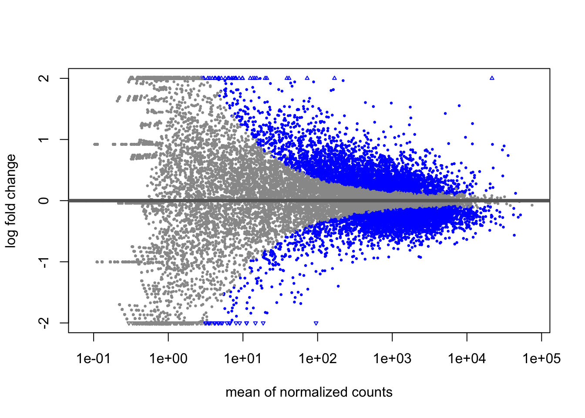
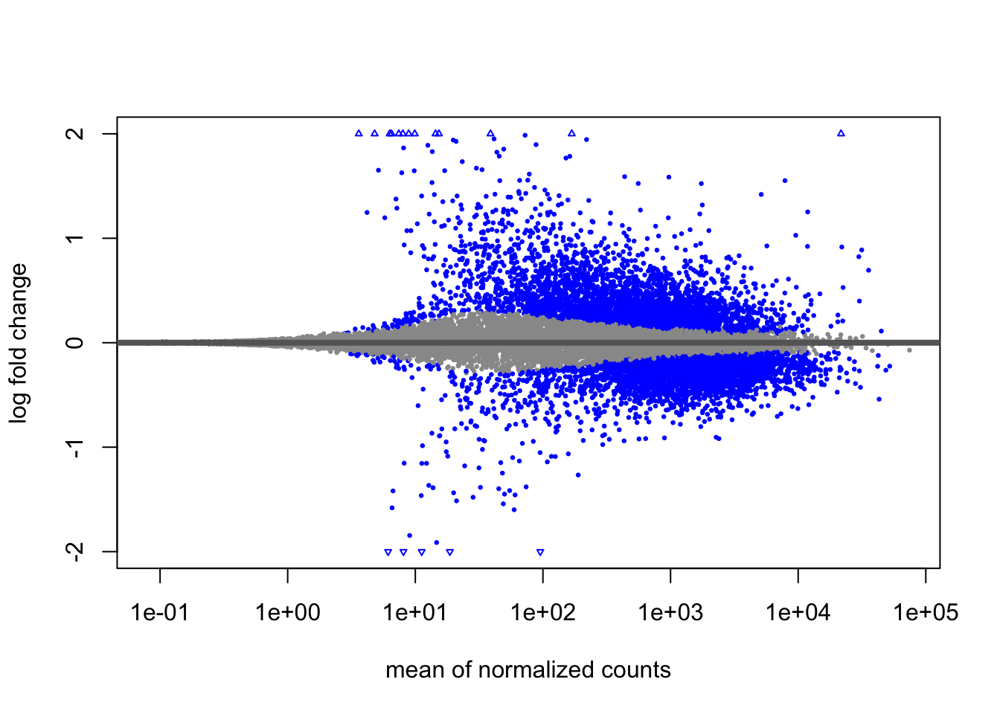

Chapter 5 Negative Binomial model fitting
5.1 Generalized Linear Model fit for each gene
The final step in the DESeq2 workflow is fitting the Negative Binomial model for each gene and performing differential expression testing.

Exercise points = +1
In the DESeq2 workflow, what is the purpose of the design matrix in the context of fitting the Negative Binomial model for each gene?
DESeq2 fits the Negative Binomial model to the normalized count data for each gene, taking into account the size factors and dispersion estimates calculated earlier. The model estimates beta coefficients for each experimental condition – these are the statistical parameters that represent the log2 fold changes for each experimental condition compared to the baseline. For example, if your experiment compares MOV10 overexpression vs. control, DESeq2 calculates a beta coefficient that tells you how much gene expression changed due to the MOV10 overexpression (on the log2 scale).
However, these initial log2 fold change estimates can be unreliable for genes with low counts or high dispersion. These genes have high uncertainty in their fold change estimates (large lfcSE), which can lead to inflated fold changes that may not be biologically meaningful.
5.2 Shrunken log2 foldchanges (LFC)
To generate more accurate log2 foldchange estimates, DESeq2 allows for the shrinkage of the LFC estimates toward zero when the information for a gene is low, which could include:
- Low counts
- High dispersion values
As with the shrinkage of dispersion estimates, LFC shrinkage uses information from all genes to generate more accurate estimates. DESeq2 looks at the pattern of fold changes across all genes in your dataset and uses this information to adjust estimates for genes with little reliable data (low counts or high dispersion) toward more reasonable values.

For example, in the figure above, Looking at the figure, the green and purple genes both show similar average expression levels between the two sample groups, but they differ in how much variability they have. The green gene has very consistent values (low variability), while the purple gene has much more scattered data points (high variability). Because the green gene has reliable, consistent data, DESeq2 doesn’t need to adjust its fold change estimate much - the original and adjusted estimates are nearly the same. However, for the purple gene with noisy, variable data, DESeq2 pulls the fold change estimate toward a more moderate value to account for the uncertainty.
This shows how DESeq2 tailors the amount of adjustment based on data quality - reliable genes get little adjustment, while noisy genes get more adjustment toward reasonable values.
To generate the shrunken log2 fold change estimates, you have to run an additional step on your results object (that we will create below) with the function lfcShrink().
NOTE: LFC shrinkage does not change which genes are called significantly differentially expressed (determined by padj values). It only provides more accurate fold change estimates for downstream analysis. Shrunk LFCs are particularly important for: - Ranking genes by effect size - Subsetting significant genes by fold change thresholds
- Functional analysis tools like GSEA that use fold changes as input - Visualization and interpretation of results
5.3 Hypothesis testing using the Wald test
For each gene, DESeq2 tests whether there is a significant difference in expression between your experimental conditions.
Null hypothesis (H₀): There is no difference between groups (log2 fold change = 0)
DESeq2 uses the Wald test to calculate a p-value for each gene, which represents the probability of observing a fold change this large (or larger) if the null hypothesis were true. If the p-value is small (typically < 0.05 after multiple testing correction), we reject the null hypothesis and conclude the gene is differentially expressed.
5.4 Creating contrasts
To indicate to DESeq2 the two groups we want to compare, we can use contrasts. A contrast is provided to DESeq2 as an argument in the results() function, the function that performs differential expression testing using the Wald test.
In the contrast you can specify the comparison of interest and the levels to compare. The level given last is the base level for the comparison. The syntax is given below:
# General syntax
contrast <- c("condition", "level_to_compare", "base_level")
results(dds, contrast = contrast)5.4.0.1 MOV10 DE analysis: contrasts and Wald tests
We have three sample classes so we can make three possible pairwise comparisons:
- Control vs. Mov10 overexpression
- Control vs. Mov10 knockdown
- Mov10 knockdown vs. Mov10 overexpression
We are really only interested in #1 and #2 from above. Using the design formula we provided ~ sampletype, indicating that this is our main factor of interest.
5.4.1 Building the results table
To build our results table we will use the results() function. To specify which groups to compare, we supply the contrast using the contrast argument. In this example, we’ll first extract the unshrunken results for MOV10 overexpression vs. Control, then apply log2 fold change shrinkage.
# Define contrasts
contrast_oe <- c("sampletype",
"MOV10_overexpression",
"control")
# Extract results table (unshrunken)
res_tableOE_unshrunken <- results(dds, contrast = contrast_oe)
# Check available coefficients for shrinkage
resultsNames(dds)## [1] "Intercept"
## [2] "sampletype_MOV10_knockdown_vs_control"
## [3] "sampletype_MOV10_overexpression_vs_control"# Shrink log2 fold changes
res_tableOE <- lfcShrink(dds = dds,
coef = "sampletype_MOV10_overexpression_vs_control",
res = res_tableOE_unshrunken)
# Save the results for future use
saveRDS(res_tableOE, file = "data/res_tableOE.RDS")Understanding the contrast order:
This calculates fold changes as: MOV10_overexpression / control
Interpreting the results:
Positive log2FC → gene is upregulated in MOV10_overexpression (higher expression than control)
Negative log2FC → gene is downregulated in MOV10_overexpression (lower expression than control)
For example, log2FC = -2 means the gene has 4-fold lower expression in MOV10_overexpression compared to control.
STOPPED HERE
MA Plot
A MA plot visualizes the relationship between the mean expression (on the x-axis) and the log2 fold change (on the y-axis) for all genes in a dataset. Genes that are significantly differentially expressed are highlighted, while most other genes cluster around zero log2 fold change.
When shrinkage is applied, as in DESeq2, large log2 fold change estimates for genes with low counts or high variability are pulled toward more moderate values, reducing the noise in the plot. This helps focus attention on the more reliable fold changes and makes the plot cleaner, especially for low-expression genes that tend to have more variable LFC estimates without shrinkage.
This plot is also a great way to illustrate the effect of LFC shrinkage.
Lots of shrinkage = noisy data or many lowly expressed genes Minimal shrinkage = high quality, well-powered dataset
DESeq2 provides a simple function to generate an MA plot.
Unshrunken results:

Notice the wide spread of fold changes, especially for low-expression genes.
Shrunken results:

After shrinkage, extreme fold changes from low-count genes are moderated, while high-confidence changes are preserved.
What to look for: Significant genes should be distributed across expression levels. If all your DE genes are low-expression, this may indicate quality issues.
5.4.2 MOV10 DE analysis: results exploration
The results table looks very much like a data.frame and in many ways it can be treated like one (i.e when accessing/subsetting data). However, it is important to recognize that it is actually stored in a DESeqResults object. When we start visualizing our data, this information will be helpful.
## [1] "DESeqResults"
## attr(,"package")
## [1] "DESeq2"Let’s go through some of the columns in the results table to get a better idea of what we are looking at. To extract information regarding the meaning of each column we can use mcols():
## DataFrame with 5 rows and 2 columns
## type description
## <character> <character>
## baseMean intermediate mean of normalized c..
## log2FoldChange results log2 fold change (MA..
## lfcSE results posterior SD: sample..
## pvalue results Wald test p-value: s..
## padj results BH adjusted p-values- baseMean: intermediate mean of normalized counts for all samples
- log2FoldChange: results log2 fold change (MLE): condition MOV10_overexpression vs control
- lfcSE: results standard error: condition MOV10_overexpression vs control
- pvalue: results Wald test p-value: condition MOV10_overexpression vs control
- padj: results BH adjusted p-values
lfcSE: Standard error of the log2FoldChange (uncertainty in the estimate). This is used to calculate the p-value - genes with high uncertainty are less likely to be significant.
5.4.3 How DESeq2 determines significance
DESeq2 uses the Wald test to ask: “Is the fold change large compared to its uncertainty?”
The logic:
Calculate how many “standard errors” away from zero the fold change is:
Wald statistic = log2FC / lfcSEConvert this to a p-value: “How likely is a value this extreme if there’s really no difference?”
Large fold changes with low uncertainty → small p-values → significant
Example:
Gene A: log2FC = 2, lfcSE = 0.5 → Wald = 4 → very small p-value ✅
Gene B: log2FC = 2, lfcSE = 2.0 → Wald = 1 → large p-value ❌
Now let’s look at the results:
## log2 fold change (MAP): sampletype MOV10_overexpression vs control
## Wald test p-value: sampletype MOV10 overexpression vs control
## DataFrame with 6 rows and 5 columns
## baseMean log2FoldChange lfcSE pvalue padj
## <numeric> <numeric> <numeric> <numeric> <numeric>
## 1/2-SBSRNA4 45.652040 0.16820235 0.209100 0.1610752 0.2750250
## A1BG 61.093102 0.13645896 0.176779 0.2401909 0.3716156
## A1BG-AS1 175.665807 -0.04046122 0.116928 0.6789312 0.7840468
## A1CF 0.237692 0.00626747 0.210057 0.7945932 NA
## A2LD1 89.617985 0.29017719 0.195395 0.0333343 0.0774672
## A2M 5.860084 -0.09619722 0.233561 0.1057823 0.1976308## [1] "baseMean" "log2FoldChange" "lfcSE" "pvalue"
## [5] "padj"5.4.4 Why are some p-values NA?
DESeq2 sets p-values to NA in three cases:
- Zero counts: All samples have zero counts for the gene (can’t test what doesn’t exist)
- Outliers detected by Cook’s distance: One sample is pulling the results too much (quality control to prevent false positives)
- Low mean counts (independent filtering): Gene filtered out for having too few reads overall
This is DESeq2 being conservative - better to say “we don’t know” than to give you a misleading result.
5.4.5 Multiple Test Correction
The problem: When testing 20,000 genes, even if NONE are truly different, we’d expect ~1,000 to have p < 0.05 just by chance!
Example: - You test 20,000 genes - Find 3,000 with p < 0.05 - But ~1,000 are false positives (33% of your “hits”!)
This is called the multiple testing problem.
5.4.6 The Solution: Adjusted p-values (padj)
DESeq2 uses the Benjamini-Hochberg (BH) method to control the False Discovery Rate (FDR).
What does padj < 0.05 mean?
“Among all genes I call significant, I expect only 5% to be false positives.”
Example:
| Threshold | Genes significant | Expected false positives |
|---|---|---|
| p < 0.05 (unadjusted) | 3,000 | ~1,000 (33%) |
| padj < 0.05 (BH adjusted) | 500 | ~25 (5%) |
Much better! We go from 3,000 genes (many false) to 500 genes (mostly real).
The rule: Always use padj, not pvalue, to determine significance.
# Quick check - how many genes at different thresholds?
sum(res_tableOE$pvalue < 0.05, na.rm = TRUE) # Unadjusted## [1] 7555## [1] 6464Now let’s extract the significant genes using both padj and fold change thresholds.
5.4.7 Extracting Significant Differentially Expressed Genes
In some cases, using only the FDR threshold doesn’t sufficiently reduce the number of significant genes, making it difficult to extract biologically meaningful results. To increase stringency, we can apply an additional fold change threshold.
Let’s start by setting the thresholds for both adjusted p-value (FDR < 0.05) and log2 fold change (|log2FC| > 0.58, corresponding to a 1.5-fold change):
Next, we’ll convert the results table to a tibble for easier subsetting:
Now, we can filter the table to retain only the genes that meet the significance and fold change criteria:
sigOE <- res_tableOE_tb %>%
dplyr::filter(padj < padj.cutoff &
abs(log2FoldChange) > lfc.cutoff)
# Save the results for future use
saveRDS(sigOE,"data/sigOE.RDS")Exercise points = +2
How many genes are differentially expressed in the Overexpression vs. Control comparison based on the criteria we just defined?
Does this reduce our results? How many genes are differentially expressed in the Overexpression vs. Control comparison based on our criteria, and what percentage is this of all genes tested?
STOPPED HERE
5.4.8 MOV10 DE Analysis: Control vs. Knockdown
After examining the overexpression results, let’s move on to the comparison between Control vs. Knockdown. We’ll use contrasts in the results() function to extract the results table and store it in the res_tableKD variable.
# define contrast
contrast_kd <- c("sampletype",
"MOV10_knockdown",
"control")
# extract results table
res_tableKD_unshrunken <- results(dds,
contrast = contrast_kd)
resultsNames(dds)## [1] "Intercept"
## [2] "sampletype_MOV10_knockdown_vs_control"
## [3] "sampletype_MOV10_overexpression_vs_control"# shrink log2 fold changes
res_tableKD <- lfcShrink(dds = dds,
coef = "sampletype_MOV10_knockdown_vs_control",
res = res_tableKD_unshrunken)
## Save results for future use
saveRDS(res_tableKD, file = "data/res_tableKD.RDS")Next, let’s perform the same analysis for the Control vs. Mov10 knockdown comparison. We’ll use the same thresholds for adjusted p-value (FDR < 0.05) and log2 fold change (|log2FC| > 0.58).
res_tableKD_tb <- res_tableKD %>%
data.frame() %>%
rownames_to_column(var = "gene") %>%
as_tibble()
sigKD <- res_tableKD_tb %>%
dplyr::filter(padj < padj.cutoff &
abs(log2FoldChange) > lfc.cutoff)
# We'll save this object for use in the homework
saveRDS(sigKD,"data/sigKD.RDS")Exercise points = +1
How many genes are differentially expressed in the Knockdown compared to Control comparison based on our padj.cutoff & lfc.cutoff?
With our subset of significant genes identified, we can now proceed to visualize the results and explore patterns of differential expression.